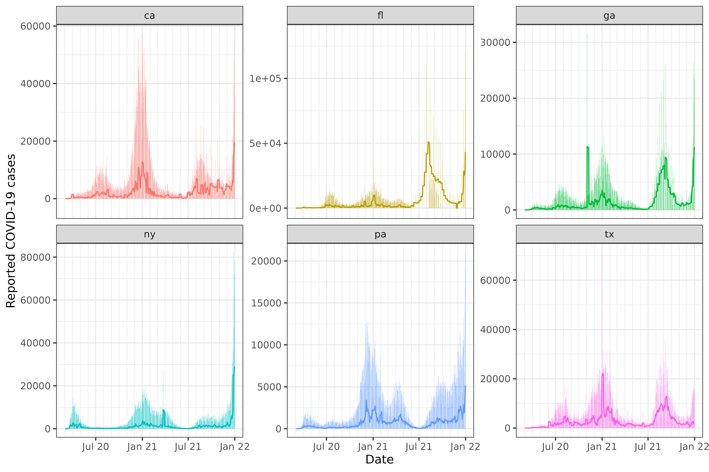
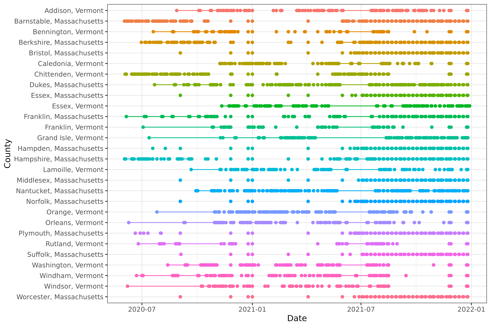

The epi_df data structure provided by
epiprocess provides convenient ways to perform common
processing tasks. In this vignette, we will:
- construct an
epi_dffrom a data frame - perform rolling time-window computations using
epi_slide() - perform group-level aggregation using
sum_groups_epi_df() - detect and fill time gaps using
complete.epi_df()and tsibble - perform geographic aggregation (not yet implemented)
Getting data into epi_df format
As in vignette("epiprocess"), we will fetch daily
reported COVID-19 cases from CA, FL, NY, and TX (note: here we’re using
new, not cumulative cases) using the epidatr
package, and then convert this to epi_df format.
The data is included in the epidatasets
package, which is loaded along with epiprocess, and can
be accessed with:
edf <- cases_deaths_subset %>%
select(geo_value, time_value, cases) %>%
arrange(geo_value, time_value)The data can also be fetched from the Delphi Epidata API with the following query:
library(epidatr)
d <- as.Date("2024-03-20")
edf <- pub_covidcast(
source = "jhu-csse",
signals = "confirmed_incidence_num",
geo_type = "state",
time_type = "day",
geo_values = "ca,fl,ny,tx,ga,pa",
time_values = epirange(20200301, 20211231),
as_of = d
) %>%
select(geo_value, time_value, cases = value) %>%
arrange(geo_value, time_value) %>%
as_epi_df(as_of = d)The data has 2,684 rows and 3 columns.
Rolling computations using epi_slide
A very common operation in time series processing is aggregating the
values of the time series by applying some function on a rolling time
window of data points. The key tool that allows this is
epi_slide(). The function always first makes sure to group
the data by the grouping variables of the epi_df object,
which includes the geo_value and possibly
other_keys columns. It then applies the rolling slide
computation inside each group.
The epi_slide() function has three ways to specify the
computation to be performed:
- by using a tidy evaluation approach
- by passing a formula
- by passing a function
Slide the tidy way
Usually, the most convenient way to setup a computation in
epi_slide() is to pass in an expression for tidy
evaluation. In this case, we can simply define the name of the new
column directly as part of the expression, setting it equal to a
computation in which we can access any columns of .x by
name, just as we would in a call to, say, dplyr::mutate().
For example:
As a simple sanity check, we visualize the 7-day trailing averages computed on top of the original counts:
library(ggplot2)
ggplot(slide_output, aes(x = time_value)) +
geom_col(aes(y = cases, fill = geo_value), alpha = 0.5, show.legend = FALSE) +
geom_line(aes(y = cases_7sd, col = geo_value), show.legend = FALSE) +
facet_wrap(~geo_value, scales = "free_y") +
scale_x_date(minor_breaks = "month", date_labels = "%b %y") +
labs(x = "Date", y = "Reported COVID-19 cases")
As we can see from the Texas plot, the state moved to weekly reporting of COVID-19 cases in summer of 2021.
Note that without epi_slide(), the computation is much
less convenient. For instance, a rough equivalent of the above
computation would be the following, which is easy to get wrong:
edf %>%
complete(geo_value, time_value = seq.Date(min(time_value), max(time_value), by = "day")) %>%
arrange_canonical() %>%
group_by(geo_value) %>%
mutate(cases_7sd = slider::slide_dbl(cases, .f = sd, na.rm = TRUE, .before = 7, .after = 0)) %>%
ungroup()
#> An `epi_df` object, 4,026 x 4 with metadata:
#> * geo_type = state
#> * time_type = day
#> * as_of = 2024-03-20
#>
#> # A tibble: 4,026 × 4
#> geo_value time_value cases cases_7sd
#> <chr> <date> <dbl> <dbl>
#> 1 ca 2020-03-01 6 NA
#> 2 ca 2020-03-02 4 1.41
#> 3 ca 2020-03-03 6 1.15
#> 4 ca 2020-03-04 11 2.99
#> 5 ca 2020-03-05 10 2.97
#> 6 ca 2020-03-06 18 5.08
#> # ℹ 4,020 more rowsFurthermore epi_slide() allows for selecting
.ref_time_value, which the latter recipe does not
support.
Slide with a function
We can also pass a function to the second argument in
epi_slide(). In this case, the passed function
.f must have the form function(x, g, t, ...),
where
-
xis an epi_df with the same column names as the input epi_df -
gis a one-row tibble containing the values of the grouping variables for the associated group, for instanceg$geo_value -
tis the ref_time_value for the current window -
...(optional) are any additional arguments you’d like to be able to forward to your function
The same computation as above can be done with a function:
edf %>%
epi_slide(.f = function(x, g, t) sd(x$cases, na.rm = TRUE), .window_size = 7)
#> An `epi_df` object, 4,026 x 4 with metadata:
#> * geo_type = state
#> * time_type = day
#> * as_of = 2024-03-20
#>
#> # A tibble: 4,026 × 4
#> geo_value time_value cases slide_value
#> <chr> <date> <dbl> <dbl>
#> 1 ca 2020-03-01 6 NA
#> 2 ca 2020-03-02 4 1.41
#> 3 ca 2020-03-03 6 1.15
#> 4 ca 2020-03-04 11 2.99
#> 5 ca 2020-03-05 10 2.97
#> 6 ca 2020-03-06 18 5.08
#> # ℹ 4,020 more rows
epi_slide() with a formula
The same computation as above can be done with a formula, where all
references to the columns must be made with the prefix
.x$..., for instance:
edf %>%
epi_slide(~ sd(.x$cases, na.rm = TRUE), .window_size = 7)
#> An `epi_df` object, 4,026 x 4 with metadata:
#> * geo_type = state
#> * time_type = day
#> * as_of = 2024-03-20
#>
#> # A tibble: 4,026 × 4
#> geo_value time_value cases slide_value
#> <chr> <date> <dbl> <dbl>
#> 1 ca 2020-03-01 6 NA
#> 2 ca 2020-03-02 4 1.41
#> 3 ca 2020-03-03 6 1.15
#> 4 ca 2020-03-04 11 2.99
#> 5 ca 2020-03-05 10 2.97
#> 6 ca 2020-03-06 18 5.08
#> # ℹ 4,020 more rowsNote that the name of the column defaults to slide_value
in the unnamed formula or function case. This can be adjusted with
.new_col_name.
Rolling computations with multiple column outputs
If your formula (or function) returns a tibble (or other kind of data
frame), then its columns will be unpacked into the resulting
epi_df (in the sense of tidyr::unpack()). For
example, the following computes the 7-day trailing average of daily
cases as well as the the 7-day trailing standard deviation of daily
cases:
edf %>%
epi_slide(
~ tibble(
cases_mean = mean(.x$cases, na.rm = TRUE),
cases_sd = sd(.x$cases, na.rm = TRUE)
),
.window_size = 7
)
#> An `epi_df` object, 4,026 x 5 with metadata:
#> * geo_type = state
#> * time_type = day
#> * as_of = 2024-03-20
#>
#> # A tibble: 4,026 × 5
#> geo_value time_value cases cases_mean cases_sd
#> <chr> <date> <dbl> <dbl> <dbl>
#> 1 ca 2020-03-01 6 6 NA
#> 2 ca 2020-03-02 4 5 1.41
#> 3 ca 2020-03-03 6 5.33 1.15
#> 4 ca 2020-03-04 11 6.75 2.99
#> 5 ca 2020-03-05 10 7.4 2.97
#> 6 ca 2020-03-06 18 9.17 5.08
#> # ℹ 4,020 more rowsOptimized rolling mean and sums
For the two most common sliding operations, we offer two optimized
versions: epi_slide_mean() and
epi_slide_sum(). These are much faster than
epi_slide(), so we recommend using them when you are only
interested in the mean or sum of a column. The following computes the
7-day trailing mean of daily cases, allowing means and sums to be taken
over fewer than 7 observations if there is missingness
(na.rm = TRUE):
edf %>%
epi_slide_mean("cases", .window_size = 7, na.rm = TRUE)
#> An `epi_df` object, 4,026 x 4 with metadata:
#> * geo_type = state
#> * time_type = day
#> * as_of = 2024-03-20
#>
#> # A tibble: 4,026 × 4
#> geo_value time_value cases cases_7dav
#> <chr> <date> <dbl> <dbl>
#> 1 ca 2020-03-01 6 6
#> 2 ca 2020-03-02 4 5
#> 3 ca 2020-03-03 6 5.33
#> 4 ca 2020-03-04 11 6.75
#> 5 ca 2020-03-05 10 7.4
#> 6 ca 2020-03-06 18 9.17
#> # ℹ 4,020 more rows
edf %>%
epi_slide_sum("cases", .window_size = 7, na.rm = TRUE)
#> An `epi_df` object, 4,026 x 4 with metadata:
#> * geo_type = state
#> * time_type = day
#> * as_of = 2024-03-20
#>
#> # A tibble: 4,026 × 4
#> geo_value time_value cases cases_7dsum
#> <chr> <date> <dbl> <dbl>
#> 1 ca 2020-03-01 6 6
#> 2 ca 2020-03-02 4 10
#> 3 ca 2020-03-03 6 16
#> 4 ca 2020-03-04 11 27
#> 5 ca 2020-03-05 10 37
#> 6 ca 2020-03-06 18 55
#> # ℹ 4,020 more rowsRunning a forecaster on a sliding window of data
The natural next step is to use the sliding window to forecast future
values. However to do this correctly, we should make sure that our data
is historically accurate. The data structure we use for that is the
epi_archive and the analogous slide function is
epix_slide(). To read further along this train of thought,
see vignette("epi_archive").
Adding more keys to an epi_df and aggregating groups
with sum_groups_epi_df
An epi_df object can have more key columns than just
geo_value and time_value. For example, if we
have demographic attributes like age group, we can add this as a key
column. We can then aggregate the data by these key columns using
sum_groups_epi_df(). Let’s use influenza hospitalization
rate data from the CDC system FluSurv as an example. We can get it from
the Delphi
Epidata API.
library(epidatr)
flu_data_api <- pub_flusurv(
locations = "ca",
epiweeks = epirange(201801, 202001)
)We’re interested in the age-specific rates:
flu_data <- flu_data_api %>%
select(location, epiweek, rate_age_0, rate_age_1, rate_age_2, rate_age_3, rate_age_4) %>%
# Turn `rate_age_0`..`rate_age_4` columns into an `age_group` and `rate`
# column (with 5x as many rows):
tidyr::pivot_longer(
cols = starts_with("rate_age_"), names_to = "age_group", values_to = "rate",
# When converting column names to entries in `age_group`, remove this prefix:
names_prefix = "rate_age_",
# And add a better prefix:
names_transform = function(age_group) paste0("age_group_", age_group)
) %>%
# Improve `age_group` labels a bit more:
mutate(
age_group = case_match(
age_group,
"age_group_0" ~ "0--4 yr",
"age_group_1" ~ "5--17 yr",
"age_group_2" ~ "18--49 yr",
"age_group_3" ~ "50--64 yr",
"age_group_4" ~ ">= 65 yr",
# Make this a factor with appropriate level ordering:
.ptype = factor(levels = c(
"0--4 yr", "5--17 yr", "18--49 yr",
"50--64 yr", ">= 65 yr"
))
)
) %>%
# The API currently outputs `epiweek` in Date format (the constituent Sunday);
# rename it to remind us that it's not in YYYYww format:
rename(time_value = epiweek)
flu_data
#> # A tibble: 305 × 4
#> location time_value age_group rate
#> <chr> <date> <fct> <dbl>
#> 1 CA 2017-12-31 0--4 yr 4.4
#> 2 CA 2017-12-31 5--17 yr 1.7
#> 3 CA 2017-12-31 18--49 yr 2.7
#> 4 CA 2017-12-31 50--64 yr 18.7
#> 5 CA 2017-12-31 >= 65 yr 99.7
#> 6 CA 2018-01-07 0--4 yr 4.4
#> # ℹ 299 more rowsWe can now convert this data to an epi_df object and set
the age_group column as an additional group key:
flu_data <- flu_data %>% as_epi_df(other_keys = "age_group")
#> inferring geo_value column.
flu_data
#> An `epi_df` object, 305 x 4 with metadata:
#> * geo_type = state
#> * time_type = week
#> * other_keys = age_group
#> * as_of = 2025-04-08 20:56:19.178358
#>
#> # A tibble: 305 × 4
#> geo_value age_group time_value rate
#> * <chr> <fct> <date> <dbl>
#> 1 CA 0--4 yr 2017-12-31 4.4
#> 2 CA 5--17 yr 2017-12-31 1.7
#> 3 CA 18--49 yr 2017-12-31 2.7
#> 4 CA 50--64 yr 2017-12-31 18.7
#> 5 CA >= 65 yr 2017-12-31 99.7
#> 6 CA 0--4 yr 2018-01-07 4.4
#> # ℹ 299 more rowsNote that the epi_df object now has an additional key
column age_group. This means that there should only be one
row for each combination of geo_value,
age_group, and time_value in the dataset (this
is enforced at construction time).
Now we can aggregate the data by age_group, if we want
to compute the total. For count data, this would be just a single call
to sum_groups_epi_df(). Since we are working with rates, we
need to attach some population data in order to do this aggregation.
It’s somewhat ambiguous whether FluSurv-NET reporting uses either NCHS or Census
populations for time_values before 2020 included in reports
published in 2020 onward, but at least for this example, these two
sources agree exactly. FluSurv-NET also directly reports an overall
rate, so we can check our work.
# Population estimates for FluSurv-NET-covered part of CA on 2017-07-01 and
# 2018-07-01, extracted and aggregated from "vintage 2020" estimates (actually
# released by Census in June 2021 and by NCHS in September 2021), which is the
# last available reporting found with population estimates for 2017 and 2018:
pop <- tribble(
~geo_value, ~age_group, ~time_value, ~pop,
"CA", "0--4 yr", as.Date("2017-07-01"), 203813,
"CA", "5--17 yr", as.Date("2017-07-01"), 521827,
"CA", "18--49 yr", as.Date("2017-07-01"), 1722399,
"CA", "50--64 yr", as.Date("2017-07-01"), 700090,
"CA", ">= 65 yr", as.Date("2017-07-01"), 534789,
"CA", "0--4 yr", as.Date("2018-07-01"), 201265,
"CA", "5--17 yr", as.Date("2018-07-01"), 520077,
"CA", "18--49 yr", as.Date("2018-07-01"), 1725382,
"CA", "50--64 yr", as.Date("2018-07-01"), 699145,
"CA", ">= 65 yr", as.Date("2018-07-01"), 551243,
)
# Calculate fraction of total population in each age group.
pop <- pop %>%
group_by(geo_value, time_value) %>%
mutate(frac_pop = pop / sum(pop)) %>%
ungroup()After joining population onto the rate data, we can calculate the
population-weighted rate for each age group, that is, the portion of
each age_group’s rate that it contributes to the overall
rate.
fractional_rate_by_age_group <-
flu_data %>%
inner_join(
pop,
# Simple population interpolation/extrapolation scheme: last observation
# carried forward. Use the estimated population on 2017-07-01 for
# time_values 2017-07-01 through 2018-06-30, and the estimated population on
# 2018-07-01 for all subsequent time_values:
join_by(geo_value, age_group, closest(y$time_value <= x$time_value)),
# Generate errors if the two data sets don't line up as expected:
relationship = "many-to-one", unmatched = "error",
# We'll get a second time column indicating which population estimate
# was carried forward; name it time_value_for_pop:
suffix = c("", "_for_pop")
) %>%
mutate(rate_contrib = rate * frac_pop)We can then use sum_groups_epi_df to sum
population-weighted rate across all age groups to get the overall
rate.
rate_overall_recalc_edf <-
fractional_rate_by_age_group %>%
sum_groups_epi_df("rate_contrib", group_cols = c("geo_value")) %>%
rename(rate_overall_recalc = rate_contrib) %>%
# match rounding of original data:
mutate(rate_overall_recalc = round(rate_overall_recalc, 1))
rate_overall_recalc_edf
#> An `epi_df` object, 61 x 3 with metadata:
#> * geo_type = state
#> * time_type = week
#> * as_of = 2025-04-08 20:56:19.178358
#>
#> # A tibble: 61 × 3
#> geo_value time_value rate_overall_recalc
#> <chr> <date> <dbl>
#> 1 CA 2017-12-31 19.8
#> 2 CA 2018-01-07 12
#> 3 CA 2018-01-14 9
#> 4 CA 2018-01-21 6.1
#> 5 CA 2018-01-28 4.7
#> 6 CA 2018-02-04 3.4
#> # ℹ 55 more rowsLet’s compare our calculated rate to the overall rate reported by FluSurv-NET.
rate_overall_recalc_edf <-
rate_overall_recalc_edf %>%
# compare to published overall rates:
inner_join(
flu_data_api %>%
select(geo_value = location, time_value = epiweek, rate_overall),
by = c("geo_value", "time_value"),
# validate that we have exactly the same set of geo_value x time_value combinations:
relationship = "one-to-one", unmatched = "error"
)
# What's our maximum error vs. the official overall estimates?
max(abs(rate_overall_recalc_edf$rate_overall - rate_overall_recalc_edf$rate_overall_recalc))
#> [1] 0.1This small amount of difference is expected, since all the age-specific rates were rounded to the first decimal place, and population data might have been interpolated and extrapolated a bit differently in the official source, limiting our ability to precisely recreate its estimates from an age group breakdown.
Detecting and filling time gaps with
complete.epi_df
Sometimes you may have missing data in your time series. This can be
due to actual missing data, or it can be due to the fact that the data
is only reported on certain days. In the latter case, it is often useful
to fill in the missing data with explicit zeros. This can be done with
the complete.epi_df() function.
First, let’s create a data set with some missing data. We will reuse
the dataset edf from above, but modify it slightly.
edf_missing <- edf %>%
filter(geo_value %in% c("ca", "tx")) %>%
group_by(geo_value) %>%
slice(1:3, 5:6) %>%
ungroup()
edf_missing %>%
print(n = 10)
#> An `epi_df` object, 10 x 3 with metadata:
#> * geo_type = state
#> * time_type = day
#> * as_of = 2024-03-20
#>
#> # A tibble: 10 × 3
#> geo_value time_value cases
#> <chr> <date> <dbl>
#> 1 ca 2020-03-01 6
#> 2 ca 2020-03-02 4
#> 3 ca 2020-03-03 6
#> 4 ca 2020-03-05 10
#> 5 ca 2020-03-06 18
#> 6 tx 2020-03-01 0
#> 7 tx 2020-03-02 0
#> 8 tx 2020-03-03 0
#> 9 tx 2020-03-05 3
#> 10 tx 2020-03-06 1Now let’s fill in the missing data with explicit zeros:
edf_missing <- edf_missing %>%
group_by(geo_value) %>%
complete(
time_value = seq.Date(min(time_value), max(time_value), by = "day"),
fill = list(cases = 0)
) %>%
ungroup()
edf_missing %>%
print(n = 12)
#> An `epi_df` object, 12 x 3 with metadata:
#> * geo_type = state
#> * time_type = day
#> * as_of = 2024-03-20
#>
#> # A tibble: 12 × 3
#> geo_value time_value cases
#> <chr> <date> <dbl>
#> 1 ca 2020-03-01 6
#> 2 ca 2020-03-02 4
#> 3 ca 2020-03-03 6
#> 4 ca 2020-03-04 0
#> 5 ca 2020-03-05 10
#> 6 ca 2020-03-06 18
#> 7 tx 2020-03-01 0
#> 8 tx 2020-03-02 0
#> 9 tx 2020-03-03 0
#> 10 tx 2020-03-04 0
#> 11 tx 2020-03-05 3
#> 12 tx 2020-03-06 1We see that rows have been added for the missing
time_value 2020-03-04 for both of the states, with
cases set to 0. If there were explicit
NAs in the cases column, those would have been
replaced by 0 as well.
Detecting and filling time gaps with tsibble
We can also use the tsibble package to detect and fill
time gaps. We’ll work with county-level reported COVID-19 cases in MA
and VT.
The data is included in the epidatasets
package, which is loaded along with epiprocess, and can
be accessed with:
The data can also be fetched from the Delphi Epidata API with the following query:
library(epidatr)
d <- as.Date("2024-03-20")
# Get mapping between FIPS codes and county&state names:
y <- read_csv("https://github.com/cmu-delphi/covidcast/raw/c89e4d295550ba1540d64d2cc991badf63ad04e5/Python-packages/covidcast-py/covidcast/geo_mappings/county_census.csv", # nolint: line_length_linter
col_types = c(
FIPS = col_character(),
CTYNAME = col_character(),
STNAME = col_character()
)
) %>%
filter(STNAME %in% c("Massachusetts", "Vermont"), STNAME != CTYNAME) %>%
select(geo_value = FIPS, county_name = CTYNAME, state_name = STNAME)
# Fetch only counties from Massachusetts and Vermont, then append names columns as well
x <- pub_covidcast(
source = "jhu-csse",
signals = "confirmed_incidence_num",
geo_type = "county",
time_type = "day",
geo_values = paste(y$geo_value, collapse = ","),
time_values = epirange(20200601, 20211231),
as_of = d
) %>%
select(geo_value, time_value, cases = value) %>%
inner_join(y, by = "geo_value", relationship = "many-to-one", unmatched = c("error", "drop")) %>%
as_epi_df(as_of = d)The data contains 16,212 rows and 5 columns.
Converting to tsibble format
For manipulating and wrangling time series data, the tsibble
already provides a host of useful tools. A tsibble object (formerly, of
class tbl_ts) is basically a tibble (data frame) but with
two specially-marked columns: an index column
representing the time variable (defining an order from past to present),
and a key column identifying a unique observational
unit for each time point. In fact, the key can be made up of any number
of columns, not just a single one.
In an epi_df object, the index variable is
time_value, and the key variable is typically
geo_value (though this need not always be the case: for
example, if we have an age group variable as another column, then this
could serve as a second key variable). The epiprocess
package thus provides an implementation of as_tsibble() for
epi_df objects, which sets these variables according to
these defaults.
library(tsibble)
xt <- as_tsibble(x)
head(xt)
#> # A tsibble: 6 x 5 [1D]
#> # Key: geo_value [1]
#> geo_value time_value cases county_name state_name
#> <chr> <date> <dbl> <chr> <chr>
#> 1 25001 2020-06-01 4 Barnstable County Massachusetts
#> 2 25001 2020-06-02 2 Barnstable County Massachusetts
#> 3 25001 2020-06-03 6 Barnstable County Massachusetts
#> 4 25001 2020-06-04 4 Barnstable County Massachusetts
#> 5 25001 2020-06-05 2 Barnstable County Massachusetts
#> 6 25001 2020-06-06 2 Barnstable County Massachusetts
key(xt)
#> [[1]]
#> geo_value
index(xt)
#> time_value
interval(xt)
#> <interval[1]>
#> [1] 1DWe can also set the key variable(s) directly in a call to
as_tsibble(). Similar to SQL keys, if the key does not
uniquely identify each time point (that is, the key and index together
do not not uniquely identify each row), then as_tsibble()
throws an error:
head(as_tsibble(x, key = "county_name"))
#> Error in `validate_tsibble()`:
#> ! A valid tsibble must have distinct rows identified by key and index.
#> ℹ Please use `duplicates()` to check the duplicated rows.As we can see, there are duplicate county names between Massachusetts and Vermont, which caused the error.
head(duplicates(x, key = "county_name"))
#> # A tibble: 6 × 5
#> geo_value time_value cases county_name state_name
#> <chr> <date> <dbl> <chr> <chr>
#> 1 25009 2020-06-01 92 Essex County Massachusetts
#> 2 25011 2020-06-01 0 Franklin County Massachusetts
#> 3 50009 2020-06-01 0 Essex County Vermont
#> 4 50011 2020-06-01 0 Franklin County Vermont
#> 5 25009 2020-06-02 90 Essex County Massachusetts
#> 6 25011 2020-06-02 0 Franklin County MassachusettsKeying by both county name and state name, however, does work:
head(as_tsibble(x, key = c("county_name", "state_name")))
#> # A tsibble: 6 x 5 [1D]
#> # Key: county_name, state_name [1]
#> geo_value time_value cases county_name state_name
#> <chr> <date> <dbl> <chr> <chr>
#> 1 50001 2020-06-01 0 Addison County Vermont
#> 2 50001 2020-06-02 0 Addison County Vermont
#> 3 50001 2020-06-03 0 Addison County Vermont
#> 4 50001 2020-06-04 0 Addison County Vermont
#> 5 50001 2020-06-05 0 Addison County Vermont
#> 6 50001 2020-06-06 1 Addison County VermontOne of the major advantages of the tsibble package is
its ability to handle implicit gaps in time series
data. In other words, it can infer what time scale we’re interested in
(say, daily data), and detect apparent gaps (say, when values are
reported on January 1 and 3 but not January 2). We can subsequently use
functionality to make these missing entries explicit, which will
generally help avoid bugs in further downstream data processing
tasks.
Let’s first remove certain dates from our data set to create gaps:
state_naming <- read_csv("https://github.com/cmu-delphi/covidcast/raw/c89e4d295550ba1540d64d2cc991badf63ad04e5/Python-packages/covidcast-py/covidcast/geo_mappings/state_census.csv", # nolint: line_length_linter
col_types = c(NAME = col_character(), ABBR = col_character())
) %>%
transmute(state_name = NAME, abbr = tolower(ABBR)) %>%
as_tibble()
# First make geo value more readable for tables, plots, etc.
x <- x %>%
inner_join(state_naming, by = "state_name", relationship = "many-to-one", unmatched = c("error", "drop")) %>%
mutate(geo_value = paste(substr(county_name, 1, nchar(county_name) - 7), state_name, sep = ", ")) %>%
select(geo_value, time_value, cases)
xt <- as_tsibble(x) %>% filter(cases >= 3)The functions has_gaps(), scan_gaps(),
count_gaps() in the tsibble package each
provide useful summaries, in slightly different formats.
head(has_gaps(xt))
#> # A tibble: 6 × 2
#> geo_value .gaps
#> <chr> <lgl>
#> 1 Addison, Vermont TRUE
#> 2 Barnstable, Massachusetts TRUE
#> 3 Bennington, Vermont TRUE
#> 4 Berkshire, Massachusetts TRUE
#> 5 Bristol, Massachusetts TRUE
#> 6 Caledonia, Vermont TRUE
head(scan_gaps(xt))
#> # A tsibble: 6 x 2 [1D]
#> # Key: geo_value [1]
#> geo_value time_value
#> <chr> <date>
#> 1 Addison, Vermont 2020-08-28
#> 2 Addison, Vermont 2020-08-29
#> 3 Addison, Vermont 2020-08-30
#> 4 Addison, Vermont 2020-08-31
#> 5 Addison, Vermont 2020-09-01
#> 6 Addison, Vermont 2020-09-02
head(count_gaps(xt))
#> # A tibble: 6 × 4
#> geo_value .from .to .n
#> <chr> <date> <date> <int>
#> 1 Addison, Vermont 2020-08-28 2020-10-04 38
#> 2 Addison, Vermont 2020-10-06 2020-10-23 18
#> 3 Addison, Vermont 2020-10-25 2020-11-04 11
#> 4 Addison, Vermont 2020-11-06 2020-11-10 5
#> 5 Addison, Vermont 2020-11-14 2020-11-18 5
#> 6 Addison, Vermont 2020-11-20 2020-11-20 1We can also visualize the patterns of missingness:
library(ggplot2)
ggplot(
count_gaps(xt),
aes(
x = reorder(geo_value, desc(geo_value)),
color = geo_value
)
) +
geom_linerange(aes(ymin = .from, ymax = .to)) +
geom_point(aes(y = .from)) +
geom_point(aes(y = .to)) +
coord_flip() +
labs(x = "County", y = "Date") +
theme(legend.position = "none")
Using the fill_gaps() function from
tsibble, we can replace all gaps by an explicit value. The
default is NA, but in the current case, where missingness
is not at random but rather represents a small value that was censored
(only a hypothetical with COVID-19 reports, but certainly a real
phenomenon that occurs in other signals), it is better to replace it by
zero, which is what we do here. (Other approaches, such as LOCF: last
observation carried forward in time, could be accomplished by first
filling with NA values and then following up with a second
call to tidyr::fill().)
fill_gaps(xt, cases = 0) %>%
head()
#> # A tsibble: 6 x 3 [1D]
#> # Key: geo_value [1]
#> geo_value time_value cases
#> <chr> <date> <dbl>
#> 1 Addison, Vermont 2020-08-27 3
#> 2 Addison, Vermont 2020-08-28 0
#> 3 Addison, Vermont 2020-08-29 0
#> 4 Addison, Vermont 2020-08-30 0
#> 5 Addison, Vermont 2020-08-31 0
#> 6 Addison, Vermont 2020-09-01 0Note that the time series for Addison, VT only starts on August 27,
2020, even though the original (uncensored) data set itself was drawn
from a period that went back to June 6, 2020. By setting
.full = TRUE, we can at zero-fill over the entire span of
the observed (censored) data.
xt_filled <- fill_gaps(xt, cases = 0, .full = TRUE)
head(xt_filled)
#> # A tsibble: 6 x 3 [1D]
#> # Key: geo_value [1]
#> geo_value time_value cases
#> <chr> <date> <dbl>
#> 1 Addison, Vermont 2020-06-01 0
#> 2 Addison, Vermont 2020-06-02 0
#> 3 Addison, Vermont 2020-06-03 0
#> 4 Addison, Vermont 2020-06-04 0
#> 5 Addison, Vermont 2020-06-05 0
#> 6 Addison, Vermont 2020-06-06 0Explicit imputation for missingness (zero-filling in our case) can be
important for protecting against bugs in all sorts of downstream tasks.
For example, even something as simple as a 7-day trailing average is
complicated by missingness. The function epi_slide() looks
for all rows within a window of 7 days anchored on the right at the
reference time point (when .window_size = 7). But when some
days in a given week are missing because they were censored because they
had small case counts, taking an average of the observed case counts can
be misleading and is unintentionally biased upwards. Meanwhile, running
epi_slide() on the zero-filled data brings these trailing
averages (appropriately) downwards, as we can see inspecting Plymouth,
MA around July 1, 2021.
xt %>%
as_epi_df(as_of = as.Date("2024-03-20")) %>%
group_by(geo_value) %>%
epi_slide(cases_7dav = mean(cases), .window_size = 7) %>%
ungroup() %>%
filter(
geo_value == "Plymouth, MA",
abs(time_value - as.Date("2021-07-01")) <= 3
) %>%
print(n = 7)
#> An `epi_df` object, 0 x 4 with metadata:
#> * geo_type = custom
#> * time_type = day
#> * as_of = 2024-03-20
#>
#> # A tibble: 0 × 4
#> # ℹ 4 variables: geo_value <chr>, time_value <date>, cases <dbl>,
#> # cases_7dav <dbl>
xt_filled %>%
as_epi_df(as_of = as.Date("2024-03-20")) %>%
group_by(geo_value) %>%
epi_slide(cases_7dav = mean(cases), .window_size = 7) %>%
ungroup() %>%
filter(
geo_value == "Plymouth, MA",
abs(time_value - as.Date("2021-07-01")) <= 3
) %>%
print(n = 7)
#> An `epi_df` object, 0 x 4 with metadata:
#> * geo_type = custom
#> * time_type = day
#> * as_of = 2024-03-20
#>
#> # A tibble: 0 × 4
#> # ℹ 4 variables: geo_value <chr>, time_value <date>, cases <dbl>,
#> # cases_7dav <dbl>Geographic aggregation
We do not yet provide tools for geographic aggregation in
epiprocess. However, we have some Python geocoding
utilities available. Reach out to us if this is functionality you would
like to see us add to epiprocess.
Attribution
The percent_cli data is a modified part of the COVIDcast
Epidata API Doctor Visits data. This dataset is licensed under the
terms of the Creative Commons
Attribution 4.0 International license. Copyright Delphi Research
Group at Carnegie Mellon University 2020.
This document contains a dataset that is a modified part of the COVID-19 Data Repository by the Center for Systems Science and Engineering (CSSE) at Johns Hopkins University as republished in the COVIDcast Epidata API. This data set is licensed under the terms of the Creative Commons Attribution 4.0 International license by the Johns Hopkins University on behalf of its Center for Systems Science in Engineering. Copyright Johns Hopkins University 2020.
From the COVIDcast Epidata API: These signals are taken directly from the JHU CSSE COVID-19 GitHub repository without changes.